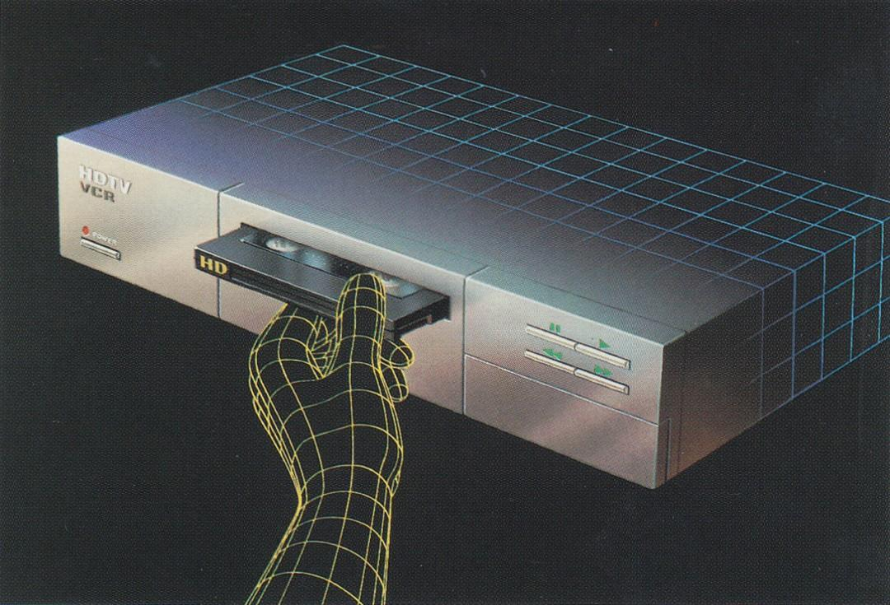

The Mind You Think You Control
April 24, 2026 • 2 min read

In neuroscience we use a tool called Transcranial Magnetic Stimulation (TMS), to understand what different parts of the brain do. When I first learned about it, it felt like magic. You hold a magnetic coil near a person's head, send a pulse, and for a short moment that part of the brain stops working. It is one of the few ways we can make causal claims about brain function. If turning off an area changes what a person can do, we know that area is necessary for that ability.
The brain works through tiny electrical signals created by chemical reactions inside its cells. These signals form patterns that let us see, feel, speak, move, and think. With TMS we can temporarily disrupt those patterns in a very specific spot. If you stimulate the visual cortex, a person might suddenly have trouble seeing colors. If you stimulate the motor cortex, their hand might not move even if they want it to. In experiments by Alvaro Pascual-Leone, stimulating the motor cortex even made people's fingers move without their intention.
Some of the most interesting work has been in the social domain. In a study by Liane Young and her team at MIT, scientists used TMS to reduce activity in the right temporo parietal junction, a region involved in moral reasoning. Participants were then asked to judge moral situations. Even though part of their brain was temporarily disabled, they still believed they were making thoughtful and independent moral judgments. They did not know that their brain's ability to process certain kinds of information was limited, so they explained their choices as if nothing unusual had happened. Other experiments have shown similar effects in trust and cooperation games. Disabling certain areas changes how people behave socially, yet they continue to believe their decisions are entirely their own.
It is humbling to learn how easily our perceptions and choices can be altered without us noticing. The things we see, the judgments we make, and the relationships we value all come from chemical reactions in the brain that produce electrical signals.